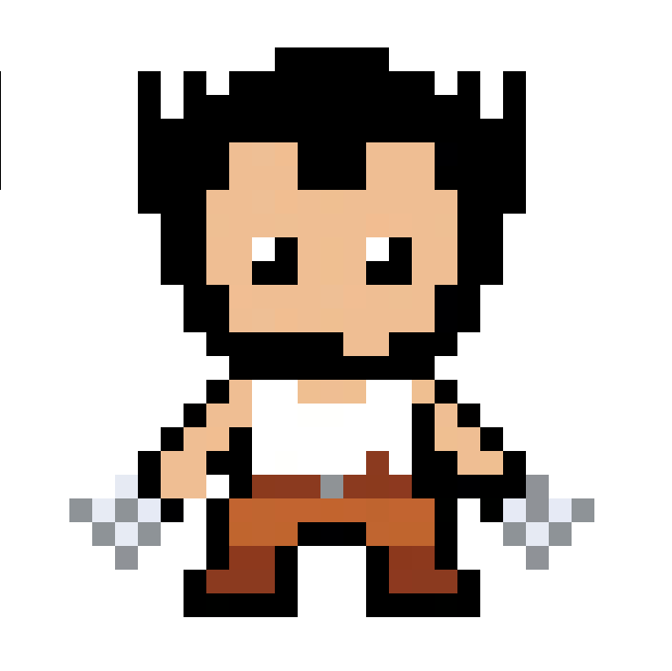

<!DOCTYPE html>
<html lang="en">
<head>
  <meta charset="UTF-8">
  <meta name="viewport" content="width=device-width, initial-scale=1.0">
  <title>KRUSKAL'S & PRIM'S ALGORITHMS // [⚔] WOLVERINE — ALGO-VENGERS</title>
  
  <meta name="description" content="Design & Analysis of Algorithms: KRUSKAL'S & PRIM'S ALGORITHMS. Mission 04: ADVANCED ALGORITHMS.">
  <meta name="theme-color" content="#f8fafc">

  <!-- Google Fonts -->
  <link rel="preconnect" href="https://fonts.googleapis.com">
  <link rel="preconnect" href="https://fonts.gstatic.com" crossorigin>
  <link href="https://fonts.googleapis.com/css2?family=Chakra+Petch:wght@500;700&family=Plus+Jakarta+Sans:wght@400;500;600;700&family=Press+Start+2P&family=Silkscreen:wght@400;700&family=JetBrains+Mono:wght@400;600&display=swap" rel="stylesheet">

  <!-- KaTeX for beautiful math formulas -->
  <link rel="stylesheet" href="https://cdn.jsdelivr.net/npm/katex@0.16.9/dist/katex.min.css">
  <script defer src="https://cdn.jsdelivr.net/npm/katex@0.16.9/dist/katex.min.js"></script>
  <script defer src="https://cdn.jsdelivr.net/npm/katex@0.16.9/dist/contrib/auto-render.min.js"></script>

  <style>
    :root {
      --bg-main: #f8fafc;
      --border-dark: #0f172a;
      --text-main: #0f172a;
      --text-muted: #475569;
      --color-gold: #d97706;
      --color-cyan: #0284c7;
      --hero-accent: #ca8a04;
      --badge-bg: #fef9c3;

      --font-pixel: 'Press Start 2P', monospace;
      --font-pixel-sub: 'Silkscreen', monospace;
      --font-body: 'Plus Jakarta Sans', system-ui, sans-serif;
      --font-code: 'JetBrains Mono', monospace;
      --top-bar-height: 32px;
      --nav-height: 72px;
      --container-max: 1100px;
    }

    *, *::before, *::after { box-sizing: border-box; margin: 0; padding: 0; }
    
    /* Pixelated retro mouse pointer */
    html, body {
      scroll-behavior: smooth;
      font-size: 16px;
      background-color: var(--bg-main);
      color: var(--text-main);
      font-family: var(--font-body);
      cursor: url("data:image/svg+xml,%3Csvg%20xmlns%3D%22http%3A//www.w3.org/2000/svg%22%20width%3D%2224%22%20height%3D%2224%22%20viewBox%3D%220%200%2024%2024%22%20shape-rendering%3D%22crispEdges%22%3E%20%3Cpath%20fill%3D%22%230f172a%22%20stroke%3D%22%23ffffff%22%20stroke-width%3D%221.5%22%20d%3D%22M2%202v18l5-5%204%208%203-1.5-4-8h6L2%202z%22/%3E%20%3C/svg%3E") 0 0, auto !important;
    }
    
    body {
      overflow-x: hidden;
      min-height: 100vh;
      line-height: 1.6;
      display: flex;
      flex-direction: column;
      background-color: var(--bg-main);
    }

    /* Native CSS Circular Hero Emblem Cursor on all interactive elements (ZERO TRAILING) */
    a, button, .pixel-btn, .topic-card, .mission-card, input, select, label, .top-progress-track-wrapper, .hero-speech-bubble, [role="button"], [data-hero-cursor], .quiz-opt-btn {
      cursor: url("data:image/svg+xml,%3Csvg%20xmlns%3D%22http%3A//www.w3.org/2000/svg%22%20width%3D%2232%22%20height%3D%2232%22%20viewBox%3D%220%200%2032%2032%22%20shape-rendering%3D%22crispEdges%22%3E%20%3Ccircle%20cx%3D%2216%22%20cy%3D%2216%22%20r%3D%2214%22%20fill%3D%22%23ca8a04%22%20stroke%3D%22%231d4ed8%22%20stroke-width%3D%222%22/%3E%20%3Cpath%20d%3D%22M9%2024%20Q13%2014%2020%208%20M12%2025%20Q16%2015%2023%209%20M15%2026%20Q19%2016%2026%2010%22%20stroke%3D%22%23f8fafc%22%20stroke-width%3D%221.5%22%20fill%3D%22none%22/%3E%20%3Cpath%20d%3D%22M23%2024%20Q19%2014%2012%208%20M20%2025%20Q16%2015%209%209%20M17%2026%20Q13%2016%206%2010%22%20stroke%3D%22%2394a3b8%22%20stroke-width%3D%221.5%22%20fill%3D%22none%22/%3E%20%3C/svg%3E") 16 16, pointer !important;
    }

    .cyber-grid-bg {
      position: fixed; top: 0; left: 0; width: 100%; height: 100%;
      background-image: linear-gradient(to right, rgba(15, 23, 42, 0.05) 1px, transparent 1px), linear-gradient(to bottom, rgba(15, 23, 42, 0.05) 1px, transparent 1px);
      background-size: 32px 32px; pointer-events: none; z-index: 0;
    }
    .container { max-width: var(--container-max); margin: 0 auto; padding: 0 24px; position: relative; z-index: 2; }
    .pixel-heading { font-family: var(--font-pixel); letter-spacing: 1px; text-transform: uppercase; }

    /* Pixel Buttons */
    .pixel-btn {
      display: inline-flex; align-items: center; justify-content: center; gap: 8px;
      padding: 10px 18px; font-family: var(--font-pixel); font-size: 0.65rem;
      text-decoration: none; text-transform: uppercase; border: 3px solid var(--border-dark);
      position: relative; user-select: none;
      transition: transform 0.1s ease, box-shadow 0.1s ease;
      box-shadow: -3px 0 0 0 var(--border-dark), 3px 0 0 0 var(--border-dark), 0 -3px 0 0 var(--border-dark), 0 3px 0 0 var(--border-dark), 0 4px 0 0 var(--border-dark);
    }
    .pixel-btn:hover { transform: translateY(-2px); box-shadow: -3px 0 0 0 var(--border-dark), 3px 0 0 0 var(--border-dark), 0 -3px 0 0 var(--border-dark), 0 3px 0 0 var(--border-dark), 0 6px 0 0 var(--border-dark); }
    .pixel-btn:active { transform: translateY(2px); box-shadow: -3px 0 0 0 var(--border-dark), 3px 0 0 0 var(--border-dark), 0 -3px 0 0 var(--border-dark), 0 3px 0 0 var(--border-dark), 0 2px 0 0 var(--border-dark); }
    .pixel-btn-primary { background: #facc15; color: #0f172a; font-weight: bold; }
    .pixel-btn-secondary { background: #ffffff; color: var(--color-cyan); }
    .pixel-btn-accent { background: var(--hero-accent); color: #ffffff; }

    /* Sticky Navbar */
    .pixel-navbar {
      position: fixed; top: var(--top-bar-height); left: 0; width: 100%; height: var(--nav-height);
      background: rgba(255, 255, 255, 0.96); backdrop-filter: blur(10px);
      border-bottom: 3px solid var(--border-dark); z-index: 1000; display: flex; align-items: center;
    }
    .nav-container { display: flex; align-items: center; justify-content: space-between; width: 100%; max-width: var(--container-max); margin: 0 auto; padding: 0 24px; }
    .nav-brand { display: flex; align-items: center; gap: 12px; text-decoration: none; }
    .brand-icon { width: 36px; height: 36px; background: #facc15; border: 2px solid var(--border-dark); display: flex; align-items: center; justify-content: center; }
    .brand-icon svg { width: 22px; height: 22px; fill: var(--border-dark); }
    .brand-text { font-family: var(--font-pixel); font-size: 1.05rem; color: var(--border-dark); }
    .brand-text span { color: #dc2626; }
    .breadcrumbs { font-family: var(--font-pixel); font-size: 0.6rem; color: var(--text-muted); display: flex; align-items: center; gap: 6px; }
    .breadcrumbs a { color: var(--color-cyan); text-decoration: none; }

    /* Persistent Top Reading Progress Bar */
    #global-top-progress {
      position: fixed; top: 0; left: 0; width: 100%; height: var(--top-bar-height);
      background: #0f172a; border-bottom: 2px solid #000; z-index: 10002;
      display: flex; align-items: center; justify-content: space-between; padding: 0 16px;
      box-shadow: 0 2px 8px rgba(0,0,0,0.4);
    }
    .top-progress-hero-badge {
      display: flex; align-items: center; gap: 8px; flex-shrink: 0;
    }
    .top-hero-symbol-box {
      width: 22px; height: 22px; background: #fef9c3; color: #ca8a04;
      border: 1.5px solid #ca8a04; font-family: var(--font-pixel); font-size: 0.75rem;
      display: flex; align-items: center; justify-content: center; border-radius: 2px;
    }
    .top-hero-title {
      font-family: var(--font-pixel); font-size: 0.58rem; color: #f8fafc; letter-spacing: 0.5px;
    }
    .top-progress-track-wrapper {
      flex: 1; max-width: 650px; margin: 0 20px; height: 10px; background: #1e293b;
      border: 1.5px solid #475569; border-radius: 999px; position: relative; cursor: pointer;
    }
    .top-progress-fill-bar {
      height: 100%; width: 0%; background: linear-gradient(90deg, #ca8a04, #eab308, #1d4ed8); border-radius: 999px;
      transition: width 0.08s ease-out;
    }
    .top-progress-slider-marker {
      position: absolute; top: 50%; left: 0%; transform: translate(-50%, -50%);
      width: 22px; height: 22px; background: #0f172a; border: 2px solid #ca8a04;
      border-radius: 50%; display: flex; align-items: center; justify-content: center;
      font-family: var(--font-pixel); font-size: 0.65rem; color: #ca8a04;
      box-shadow: 0 0 10px #ca8a04; pointer-events: none; transition: left 0.08s ease-out;
    }
    .top-progress-percent-readout {
      font-family: var(--font-pixel); font-size: 0.65rem; color: #facc15; min-width: 50px; text-align: right; flex-shrink: 0;
    }

    /* Main Container */
    main { flex: 1; padding-top: calc(var(--nav-height) + var(--top-bar-height) + 24px); padding-bottom: 60px; }

    /* Topic Hero Section */
    .topic-hero {
      background: #ffffff; border: 3px solid var(--border-dark);
      box-shadow: 0 6px 0 var(--border-dark); padding: 32px;
      margin-bottom: 32px; display: grid; grid-template-columns: auto 1fr; gap: 28px; align-items: center;
    }
    .hero-sprite-frame {
      width: 120px; height: 130px; background: var(--badge-bg);
      border: 3px solid var(--border-dark); display: flex; align-items: center; justify-content: center;
      position: relative; box-shadow: 0 4px 0 var(--border-dark); overflow: hidden;
    }
    .hero-avatar-img {
      max-width: 100px; max-height: 112px; width: auto; height: auto;
      object-fit: contain; image-rendering: pixelated;
      filter: drop-shadow(0 4px 8px rgba(0,0,0,0.25)); transition: transform 0.2s cubic-bezier(0.175, 0.885, 0.32, 1.275);
    }
    .topic-hero:hover .hero-avatar-img { transform: scale(1.1) translateY(-3px); }

    .hero-meta-tag {
      display: inline-block; font-family: var(--font-pixel); font-size: 0.6rem;
      background: #ffffff; border: 2px solid var(--border-dark); padding: 3px 10px;
      margin-bottom: 10px; font-weight: bold; color: var(--hero-accent); box-shadow: 0 2px 0 var(--border-dark);
    }
    .hero-title { font-size: 1.6rem; margin-bottom: 12px; line-height: 1.3; color: var(--border-dark); }
    .hero-tagline { font-family: var(--font-code); font-size: 0.95rem; color: var(--text-muted); margin-bottom: 14px; font-weight: 600; }
    .hero-quote-box {
      background: #f1f5f9; border-left: 4px solid var(--hero-accent);
      padding: 10px 14px; font-style: italic; color: #1e293b; font-size: 0.88rem;
    }

    /* Content Cards */
    .content-card {
      background: #ffffff; border: 3px solid var(--border-dark);
      box-shadow: 0 5px 0 var(--border-dark); padding: 28px; margin-bottom: 28px;
    }
    .card-heading {
      display: flex; justify-content: space-between; align-items: center;
      font-family: var(--font-pixel); font-size: 0.85rem; color: var(--border-dark);
      margin-bottom: 18px; border-bottom: 2px solid #e2e8f0; padding-bottom: 10px;
    }
    .card-desc-text { font-size: 0.95rem; color: #1e293b; line-height: 1.7; margin-bottom: 16px; }
    
    .math-callout {
      background: #f1f5f9; border: 2px solid var(--border-dark); padding: 16px 20px;
      font-size: 0.95rem; margin-bottom: 16px; color: #0f172a;
      box-shadow: 0 3px 0 var(--border-dark); overflow-x: auto;
    }

    /* Table */
    .algo-table { width: 100%; border-collapse: collapse; margin-top: 10px; font-size: 0.9rem; }
    .algo-table th, .algo-table td { border: 2px solid var(--border-dark); padding: 12px 14px; text-align: left; }
    .algo-table th { background: #f8fafc; font-family: var(--font-pixel); font-size: 0.65rem; color: var(--border-dark); }
    .complexity-badge {
      display: inline-block; font-family: var(--font-code); font-weight: bold;
      background: var(--badge-bg); color: var(--hero-accent); border: 1px solid var(--hero-accent);
      padding: 3px 8px; border-radius: 4px; font-size: 0.85rem;
    }

    /* Code Block */
    .code-box {
      background: #0f172a; color: #f8fafc; border: 3px solid var(--border-dark);
      padding: 20px; font-family: var(--font-code); font-size: 0.85rem; line-height: 1.6;
      overflow-x: auto; position: relative; box-shadow: 0 5px 0 var(--border-dark);
    }
    .code-header {
      display: flex; justify-content: space-between; align-items: center;
      margin-bottom: 10px; font-family: var(--font-pixel); font-size: 0.65rem; color: #94a3b8;
    }

    /* Interactive Visualizer Canvas */
    .viz-container {
      background: #f8fafc; border: 2px dashed var(--border-dark); padding: 20px;
      border-radius: 4px; display: flex; flex-direction: column; align-items: center; gap: 16px;
    }

    /* Speech Bubble */
    .hero-speech-bubble { transition: transform 0.15s ease; }
    .hero-speech-bubble:hover { transform: translateY(-2px); }

    /* Bottom Actions */
    .bottom-section {
      text-align: center; margin-top: 30px; display: flex; flex-direction: column;
      align-items: center; gap: 16px;
    }
    .pixel-divider { width: 180px; height: 4px; background: repeating-linear-gradient(to right, var(--border-dark) 0px, var(--border-dark) 8px, transparent 8px, transparent 16px); }
  </style>
</head>
<body>

  <div class="cyber-grid-bg"></div>

  <!-- Persistent Top Reading Progress Bar -->
  <div id="global-top-progress">
    <div class="top-progress-hero-badge">
      <div class="top-hero-symbol-box">[⚔]</div>
      <div class="top-hero-title">WOLVERINE // Adamantium Crossed Claws</div>
    </div>
    <div class="top-progress-track-wrapper" id="global-progress-track" title="Click anywhere along the bar to jump in the dossier">
      <div class="top-progress-fill-bar" id="global-progress-fill"></div>
      <div class="top-progress-slider-marker" id="global-progress-marker">⚔</div>
    </div>
    <div class="top-progress-percent-readout" id="global-progress-pct">0%</div>
  </div>

  <!-- Sticky Navbar -->
  <header class="pixel-navbar">
    <div class="nav-container">
      <a href="index.html" class="nav-brand">
        <div class="brand-icon"><svg viewBox="0 0 24 24"><polygon points="12,2 8,20 11,20 12,14 16,14 17,20 20,20 15,2"/><polygon points="12,6 10,12 14,12" fill="#facc15"/></svg></div>
        <div class="brand-text">ALGO-<span>VENGERS</span></div>
      </a>

      <div class="breadcrumbs">
        <a href="index.html">HQ</a> <span>▶</span>
        <a href="missions.html">MISSIONS</a> <span>▶</span>
        <a href="mission-04.html">MISSION 04</a> <span>▶</span>
        <span style="color: var(--border-dark); font-weight: bold;">TOPIC 04</span>
      </div>

      <div>
        <a href="mission-04.html" class="pixel-btn pixel-btn-secondary" style="padding: 6px 12px; font-size: 0.6rem;">← MISSION HUB</a>
      </div>
    </div>
  </header>

  <main>
    <div class="container">

      <!-- Topic Hero Section -->
      <section class="topic-hero">
        <div class="hero-sprite-frame">
          
        </div>
        <div>
          <span class="hero-meta-tag">MISSION 04 // [⚔] WOLVERINE</span>
          <h1 class="hero-title pixel-heading">KRUSKAL'S & PRIM'S ALGORITHMS</h1>
          <div class="hero-tagline">ADAMANTIUM CUTTING STRATEGIES // Adamantium Cut Strategies: Kruskal & Prim</div>
          <div class="hero-quote-box">"Two ways to slice an MST: sort global edges with adamantium claws (Kruskal) or expand from one root (Prim). Either way, villains don't escape."</div>
        </div>
      </section>

      <!-- 01. S.H.I.E.L.D. Mission Briefing & Marvel Story -->
      <section class="content-card" style="border-left: 6px solid #ca8a04;">
        <h2 class="card-heading">
          <span>01. S.H.I.E.L.D. MISSION BRIEFING // OP-WOLVERINE-16</span>
          <span style="font-size: 0.6rem; color: var(--hero-accent);">WEAPON X ADAMANTIUM PIPELINE NETWORK</span>
        </h2>
        <div class="card-desc-text" style="font-size: 1.02rem; font-weight: 500; color: #0f172a; margin-bottom: 12px;">
          Col. Stryker has established underground Weapon X research facilities connected by subterranean pipelines. Logan must dismantle the network using two distinct adamantium cutting strategies: Kruskal's global claw slice vs. Prim's base expansion.
        </div>
        <div style="background: #f1f5f9; border: 2px dashed #475569; padding: 12px 16px; margin-bottom: 10px;">
          <div style="font-family: var(--font-pixel); font-size: 0.6rem; color: #dc2626; margin-bottom: 4px;">CRITICAL CRISIS:</div>
          <div style="font-size: 0.9rem; color: #334155;">Sparse wilderness pipelines require global edge sorting; dense urban facility hubs have too many edges to sort efficiently.</div>
        </div>
        <div style="background: #ecfdf5; border: 2px solid #10b981; padding: 12px 16px;">
          <div style="font-family: var(--font-pixel); font-size: 0.6rem; color: #059669; margin-bottom: 4px;">TACTICAL OBJECTIVE:</div>
          <div style="font-size: 0.9rem; color: #065f46;">Guide Wolverine through Kruskal's edge-centric forest merging and Prim's vertex-centric growing tree.</div>
        </div>
      </section>

      <!-- 02. Formal Specification & Problem Invariants -->
      <section class="content-card">
        <h2 class="card-heading">
          <span>02. FORMAL PROBLEM SPECIFICATION & INVARIANTS</span>
          <span style="font-size: 0.6rem; color: var(--hero-accent);">ACADEMIC CURRICULUM</span>
        </h2>
        <div class="card-desc-text">
<p>Kruskal's and Prim's algorithms represent two contrasting greedy methodologies for computing a <strong>Minimum Cost Spanning Tree (MST)</strong> on a connected, weighted, undirected graph \(G = (V, E)\).</p>
<p><strong>1. Kruskal's Algorithm (Edge-Centric / Forest-Growing):</strong></p>
<ul>
  <li>Sorts all \(|E|\) edges globally in non-decreasing order of weight: \(w(e_1) \le w(e_2) \le \dots \le w(e_m)\).</li>
  <li>Iterates through sorted edges, greedily adding edge \((u, v)\) to the MST if and only if it does not form a cycle with previously chosen edges.</li>
  <li>Cycle detection is maintained in \(O(lpha(V))\) time using a <strong>Disjoint-Set Union (DSU)</strong> data structure.</li>
  <li>Works best on <strong>Sparse Graphs</strong> where \(|E| \ll |V|^2\).</li>
</ul>
<p><strong>2. Prim's Algorithm (Vertex-Centric / Tree-Growing):</strong></p>
<ul>
  <li>Begins at an arbitrary starting root vertex \(s\), initializing a growing tree \(T = \{s\}\).</li>
  <li>At each iteration, identifies the minimum-weight edge connecting a vertex in \(T\) to a vertex outside \(T\) (the cut \((T, V - T)\)).</li>
  <li>Greedily adds this lightest frontier edge and the adjacent vertex to \(T\), repeating until all \(|V|\) vertices are spanned.</li>
  <li>Maintained using a <strong>Min-Priority Queue (Binary Heap)</strong>.</li>
  <li>Works best on <strong>Dense Graphs</strong> where \(|E| pprox |V|^2\).</li>
</ul>
</div>
      </section>

      <!-- Speech Bubble Callout 1 -->
      
    <div class="hero-speech-bubble" style="display: flex; align-items: flex-start; gap: 16px; background: #ffffff; border: 3px solid #0f172a; box-shadow: 0 4px 0 #0f172a; padding: 16px; margin: 24px 0;">
      <div style="width: 58px; height: 62px; background: #fef9c3; border: 2px solid #0f172a; display: flex; align-items: center; justify-content: center; flex-shrink: 0; box-shadow: 0 2px 4px rgba(0,0,0,0.2);">
        
      </div>
      <div style="position: relative; flex: 1;">
        <div style="font-family: var(--font-pixel); font-size: 0.62rem; color: #ca8a04; margin-bottom: 4px;">
          [⚔] COMM-LINK // Wolverine
        </div>
        <div style="font-size: 0.92rem; color: #1e293b; line-height: 1.6;">
          "Listen bub: Kruskal sorts every edge up front with adamantium precision and uses Union-Find to dodge cycles. Prim grows outward from one root like a badger defending its den."
        </div>
      </div>
    </div>
    

      <!-- 03. Naive Approach vs Optimal Formulation -->
      <section class="content-card">
        <h2 class="card-heading">
          <span>03. BRUTE FORCE VS ALGORITHMIC OPTIMALITY</span>
          <span style="font-size: 0.6rem; color: var(--color-gold);">STRATEGIC COMPARISON</span>
        </h2>
        <div class="card-desc-text">
<p>Comparing Kruskal's vs Prim's performance depends fundamentally on graph density. On a sparse road network with \(V = 10,000\) and \(E = 20,000\), Kruskal's edge sorting takes \(20,000 \log(20,000)\) steps, beating Prim. On a dense telecommunications mesh where \(E = 50,000,000\), Prim with a Fibonacci Heap executes in \(O(E + V \log V)\), vastly outperforming Kruskal's massive edge sort!</p>
<div style="display:grid; grid-template-columns: 1fr 1fr; gap:16px; margin-top:12px;">
  <div style="background:#fef9c3; border:2px solid #ca8a04; padding:12px; font-size:0.85rem;">
    <strong style="color:#854d0e;">KRUSKAL'S ALGORITHM</strong><br>
    Time: \(O(E \log E) = O(E \log V)\)<br>
    Data Structure: Disjoint Sets (Union-Find)<br>
    Excels on: Sparse Graphs (\(E = O(V)\))
  </div>
  <div style="background:#dcfce7; border:2px solid #16a34a; padding:12px; font-size:0.85rem;">
    <strong style="color:#15803d;">PRIM'S ALGORITHM</strong><br>
    Time: \(O((V + E) \log V)\) with Min-Heap<br>
    Data Structure: Priority Queue<br>
    Excels on: Dense Graphs (\(E = \Omega(V^2)\))
  </div>
</div>
</div>
        <div style="background: #eff6ff; border-left: 4px solid #2563eb; padding: 12px 16px; margin-top: 12px;">
          <div style="font-family: var(--font-pixel); font-size: 0.6rem; color: #1d4ed8; margin-bottom: 4px;">WHY THIS ALGORITHM WINS:</div>
          <div style="font-size: 0.9rem; color: #1e3a8a;">Kruskal's algorithm sorts all edges globally and uses Union-Find to avoid cycles (best for sparse graphs). Prim's algorithm grows a single tree outward from a starting root using a priority queue (best for dense graphs).</div>
        </div>
      </section>

      <!-- 04. Mathematical Formulation & Recurrence Derivation -->
      <section class="content-card">
        <h2 class="card-heading">
          <span>04. MATHEMATICAL PROOFS & RECURRENCES</span>
          <span style="font-size: 0.6rem; color: #2563eb;">KATEX FORMULATION</span>
        </h2>
        <div class="math-callout">
<p><strong>Asymptotic Complexity Breakdown:</strong></p>
<ul>
  <li><strong>Kruskal's Algorithm:</strong>
      \[ T_{\text{Kruskal}} = \underbrace{O(E \log E)}_{\text{Sort edges}} + \underbrace{O(E \cdot \alpha(V))}_{\text{DSU find/unions}} = O(E \log E) = O(E \log V) \]
  </li>
  <li><strong>Prim's Algorithm with Binary Heap:</strong>
      \[ T_{\text{Prim}} = \underbrace{O(V \log V)}_{\text{Extract-Min on V vertices}} + \underbrace{O(E \log V)}_{\text{Decrease-Key on E edges}} = O((V + E) \log V) \]
  </li>
  <li><strong>Prim's Algorithm with Fibonacci Heap:</strong>
      \[ T_{\text{Fib}} = O(V \log V + E \cdot 1) = O(E + V \log V) \]
  </li>
</ul>
</div>
      </section>

      <!-- Speech Bubble Callout 2 -->
      
    <div class="hero-speech-bubble" style="display: flex; align-items: flex-start; gap: 16px; background: #ffffff; border: 3px solid #0f172a; box-shadow: 0 4px 0 #0f172a; padding: 16px; margin: 24px 0;">
      <div style="width: 58px; height: 62px; background: #fef9c3; border: 2px solid #0f172a; display: flex; align-items: center; justify-content: center; flex-shrink: 0; box-shadow: 0 2px 4px rgba(0,0,0,0.2);">
        
      </div>
      <div style="position: relative; flex: 1;">
        <div style="font-family: var(--font-pixel); font-size: 0.62rem; color: #ca8a04; margin-bottom: 4px;">
          [⚔] TACTICAL ADVICE // Wolverine
        </div>
        <div style="font-size: 0.92rem; color: #1e293b; line-height: 1.6;">
          "Exam tip: If the graph is sparse, Kruskal wins. If it's dense with edges connecting everything in sight, Prim takes the crown. Choose your weapon wisely!"
        </div>
      </div>
    </div>
    

      <!-- 05. Concrete Worked Numerical Example -->
      <section class="content-card">
        <h2 class="card-heading">
          <span>05. STEP-BY-STEP WORKED CALCULATION EXAMPLE</span>
          <span style="font-size: 0.6rem; color: #16a34a;">NUMERICAL TRACE</span>
        </h2>
        <div class="card-desc-text">
<p><strong>Worked Example:</strong> Trace Kruskal's and Prim's on a graph with vertices \(\{A, B, C, D, E\}\) and edges:</p>
<p><code>(A, B): 4, (A, C): 2, (B, C): 1, (B, D): 5, (C, D): 8, (C, E): 10, (D, E): 2, (D, A): 7</code></p>
<ol style="margin-left:20px; line-height:1.8;">
  <li><strong>Kruskal's Trace:</strong>
      <br>Sorted edges: <code>(B, C): 1, (D, E): 2, (A, C): 2, (A, B): 4, (B, D): 5, (D, A): 7, (C, D): 8, (C, E): 10</code>.
      <br>1. Pick <code>(B, C): 1</code>. Components: \(\{B, C\}\). (Edges in MST = 1).
      <br>2. Pick <code>(D, E): 2</code>. Components: \(\{B, C\}, \{D, E\}\). (Edges = 2).
      <br>3. Pick <code>(A, C): 2</code>. Components: \(\{A, B, C\}, \{D, E\}\). (Edges = 3).
      <br>4. Inspect <code>(A, B): 4</code>. <code>find(A) == find(B)</code>! Cycle detected! <strong>REJECT!</strong>
      <br>5. Pick <code>(B, D): 5</code>. Connects \(\{A, B, C\}\) to \(\{D, E\}\). (Edges = 4 = \(V - 1\)).
      <br><strong>MST Edges:</strong> \(\{(B, C): 1, (D, E): 2, (A, C): 2, (B, D): 5\}\). Total cost = <strong>10</strong>.
  </li>
  <li><strong>Prim's Trace (Start at Root A):</strong>
      <br>Initial tree: \(\{A\}\). Frontier edges from A: \((A, C): 2, (A, B): 4, (A, D): 7\).
      <br>1. Lightest edge: \((A, C): 2\). Add \(C\) to tree. Tree: \(\{A, C\}\).
      <br>2. Frontier from \(\{A, C\}\): \((C, B): 1, (A, B): 4, (C, D): 8, (C, E): 10\).
      <br>Lightest: \((C, B): 1\). Add \(B\) to tree. Tree: \(\{A, B, C\}\).
      <br>3. Frontier from \(\{A, B, C\}\): \((B, D): 5, (A, D): 7, (C, D): 8, (C, E): 10\).
      <br>Lightest: \((B, D): 5\). Add \(D\) to tree. Tree: \(\{A, B, C, D\}\).
      <br>4. Frontier from \(\{A, B, C, D\}\): \((D, E): 2, (C, E): 10\).
      <br>Lightest: \((D, E): 2\). Add \(E\) to tree. Tree: \(\{A, B, C, D, E\}\). (All vertices spanned!).
      <br><strong>Total Weight:</strong> \(2 + 1 + 5 + 2 = \mathbf{10}\). Exactly identical to Kruskal!
  </li>
</ol>
</div>
      </section>

      <!-- 06. Interactive Physical Tactical Simulation Arena -->
      <section class="content-card">
        <h2 class="card-heading">
          <span>06. RETRO PHYSICAL GAME SIMULATION & YOUR CUSTOM INPUTS</span>
          <span style="font-size: 0.6rem; color: var(--color-cyan);">LIVE SIMULATION CONSOLE</span>
        </h2>
        <div class="viz-container">
          <div class="sim-tactical-header" style="display: flex; align-items: center; justify-content: space-between; width: 100%; margin-bottom: 16px; padding: 12px 18px; background: #0f172a; border: 3px solid var(--border-dark); color: #f8fafc; box-shadow: 0 4px 0 var(--border-dark);">
            <div style="display: flex; align-items: center; gap: 14px;">
              <div style="width: 52px; height: 56px; background: #fef9c3; border: 2px solid #ffffff; display: flex; align-items: center; justify-content: center; overflow: hidden; box-shadow: 0 2px 4px rgba(0,0,0,0.4);">
                
              </div>
              <div>
                <div style="font-family: var(--font-pixel); font-size: 0.7rem; color: #facc15;">OPERATOR: [⚔] WOLVERINE</div>
                <div style="font-family: var(--font-pixel-sub); font-size: 0.8rem; color: #94a3b8;">TACTICAL DAA PHYSICAL SIMULATION ENGINE</div>
              </div>
            </div>
            <div style="font-family: var(--font-pixel); font-size: 0.6rem; background: #1e293b; color: #22c55e; padding: 6px 12px; border: 1px solid #475569;">
              STATUS: READY
            </div>
          </div>
          
<div class="sim-game-wrapper" style="width: 100%; text-align: left;">
  <div style="display: flex; justify-content: space-between; align-items: center; margin-bottom: 12px; border-bottom: 2px solid #334155; padding-bottom: 8px;">
    <div>
      <span style="font-family: var(--font-pixel); font-size: 0.75rem; color: #ca8a04;">MISSION: WEAPON X ADAMANTIUM PIPELINE NETWORK</span>
      <p style="font-size: 0.82rem; color: #64748b; margin-top: 2px;">Watch Logan compare Kruskal's global edge sorting against Prim's growing vertex cluster.</p>
    </div>
    <div style="font-family: var(--font-pixel); font-size: 0.65rem; background: #1e293b; color: #facc15; padding: 6px 10px; border: 1px solid #475569;">
      STRATEGY: <span id="wolv-mode-badge" style="color: #38bdf8;">KRUSKAL (EDGE-CENTRIC)</span>
    </div>
  </div>

  <!-- Strategy Selector & Stats Bar -->
  <div style="background: #f1f5f9; border: 2px solid #0f172a; padding: 10px 14px; margin-bottom: 14px; display: flex; flex-wrap: wrap; align-items: center; justify-content: space-between; gap: 10px;">
    <div style="display: flex; gap: 8px;">
      <button class="pixel-btn pixel-btn-primary" id="wolv-mode-kruskal" style="padding: 4px 10px; font-size: 0.58rem;">KRUSKAL'S (GLOBAL EDGES)</button>
      <button class="pixel-btn pixel-btn-secondary" id="wolv-mode-prim" style="padding: 4px 10px; font-size: 0.58rem;">PRIM'S (ROOT CLUSTER)</button>
    </div>
    <div style="font-family: var(--font-code); font-size: 0.75rem; color: #ca8a04; font-weight: bold;">
      PIPELINES SECURED: <span id="wolv-edges-count" style="color: #15803d;">0 / 4</span> | COST: <span id="wolv-cost" style="color: #0284c7;">0</span>
    </div>
  </div>

  <!-- Animated Arena Stage -->
  <div style="background: #090d16; border: 3px solid #0f172a; padding: 18px; border-radius: 6px; box-shadow: inset 0 0 16px rgba(0,0,0,0.9); margin-bottom: 14px; position: relative; min-height: 290px; overflow: hidden;">
    <!-- Wolverine Actor -->
    <div id="wolv-actor" style="position: absolute; top: 15px; left: 30px; transition: all 0.4s cubic-bezier(0.34, 1.56, 0.64, 1); z-index: 20; display: flex; flex-direction: column; align-items: center;">
      <div style="font-family: var(--font-pixel); font-size: 0.5rem; background: #ca8a04; color: #000; padding: 1px 4px; border-radius: 2px; margin-bottom: 2px; font-weight: bold;">⚔ LOGAN</div>
      
    </div>

    <!-- Network Graph SVG -->
    <svg id="wolv-graph-svg" style="width: 100%; height: 260px;">
      <!-- Pipeline Edges -->
      <line id="w-edge-0" x1="120" y1="80" x2="280" y2="50" stroke="#475569" stroke-width="3"/>
      <line id="w-edge-1" x1="280" y1="50" x2="440" y2="90" stroke="#475569" stroke-width="3"/>
      <line id="w-edge-2" x1="120" y1="80" x2="180" y2="210" stroke="#475569" stroke-width="3"/>
      <line id="w-edge-3" x1="280" y1="50" x2="180" y2="210" stroke="#475569" stroke-width="3"/>
      <line id="w-edge-4" x1="280" y1="50" x2="400" y2="210" stroke="#475569" stroke-width="3"/>
      <line id="w-edge-5" x1="440" y1="90" x2="400" y2="210" stroke="#475569" stroke-width="3"/>
      <line id="w-edge-6" x1="180" y1="210" x2="400" y2="210" stroke="#475569" stroke-width="3"/>

      <!-- Edge Weight Labels -->
      <text x="200" y="55" fill="#facc15" font-family="'JetBrains Mono'" font-size="11" font-weight="bold">w:1</text>
      <text x="360" y="60" fill="#facc15" font-family="'JetBrains Mono'" font-size="11" font-weight="bold">w:2</text>
      <text x="130" y="150" fill="#facc15" font-family="'JetBrains Mono'" font-size="11" font-weight="bold">w:4</text>
      <text x="240" y="140" fill="#facc15" font-family="'JetBrains Mono'" font-size="11" font-weight="bold">w:3</text>
      <text x="330" y="140" fill="#facc15" font-family="'JetBrains Mono'" font-size="11" font-weight="bold">w:6</text>
      <text x="430" y="160" fill="#facc15" font-family="'JetBrains Mono'" font-size="11" font-weight="bold">w:5</text>
      <text x="280" y="230" fill="#facc15" font-family="'JetBrains Mono'" font-size="11" font-weight="bold">w:7</text>

      <!-- Facility Nodes -->
      <circle id="w-node-A" cx="120" cy="80" r="18" fill="#1e293b" stroke="#ca8a04" stroke-width="3"/>
      <text x="120" y="84" fill="#fff" font-family="'Press Start 2P'" font-size="8" text-anchor="middle">A</text>

      <circle id="w-node-B" cx="280" cy="50" r="18" fill="#1e293b" stroke="#ca8a04" stroke-width="3"/>
      <text x="280" y="54" fill="#fff" font-family="'Press Start 2P'" font-size="8" text-anchor="middle">B</text>

      <circle id="w-node-C" cx="440" cy="90" r="18" fill="#1e293b" stroke="#ca8a04" stroke-width="3"/>
      <text x="440" y="94" fill="#fff" font-family="'Press Start 2P'" font-size="8" text-anchor="middle">C</text>

      <circle id="w-node-D" cx="180" cy="210" r="18" fill="#1e293b" stroke="#ca8a04" stroke-width="3"/>
      <text x="180" y="214" fill="#fff" font-family="'Press Start 2P'" font-size="8" text-anchor="middle">D</text>

      <circle id="w-node-E" cx="400" cy="210" r="18" fill="#1e293b" stroke="#ca8a04" stroke-width="3"/>
      <text x="400" y="214" fill="#fff" font-family="'Press Start 2P'" font-size="8" text-anchor="middle">E</text>
    </svg>
  </div>

  <!-- Hero Telemetry Box -->
  <div style="background: #ffffff; border: 2px solid #0f172a; padding: 12px 16px; margin-bottom: 14px; min-height: 52px; display: flex; align-items: center; box-shadow: 0 2px 0 #0f172a;" id="wolv-dialogue">
    💬 <strong>Wolverine:</strong> "Kruskal's sorts every pipeline globally across Canada. Prim's grows outward from Base A. Both slice down to the same minimal MST!"
  </div>

  <!-- Interactive Controls -->
  <div class="viz-controls" style="display: flex; flex-wrap: wrap; gap: 10px;">
    <button class="pixel-btn pixel-btn-primary" id="wolv-btn-step">⚔ CLAW SLICE NEXT EDGE</button>
    <button class="pixel-btn pixel-btn-accent" id="wolv-btn-all">▶ DISMANTLE FULL NETWORK</button>
    <button class="pixel-btn pixel-btn-secondary" id="wolv-btn-reset">↺ RESET FACILITY</button>
  </div>
</div>

        </div>
      </section>

      <!-- 07. Asymptotic Derivation & Complexity Matrix -->
      <section class="content-card">
        <h2 class="card-heading">
          <span>07. ASYMPTOTIC COMPLEXITY DERIVATION MATRIX</span>
          <span style="font-size: 0.6rem; color: var(--hero-accent);">DAA BIG-O BOUNDS</span>
        </h2>
        <table class="algo-table">
          <thead>
            <tr>
              <th>OPERATION / CASE</th>
              <th>ASYMPTOTIC BOUND</th>
              <th>SPACE / FOOTPRINT</th>
              <th>MATHEMATICAL INVARIANT</th>
            </tr>
          </thead>
          <tbody>
            
        <tr>
          <td style="font-weight: 600; color: #0f172a;">Kruskal's Time</td>
          <td><span class="complexity-badge">O(E log V)</span></td>
          <td style="font-family: var(--font-code); color: #ca8a04; font-weight: 600;">O(V) space</td>
          <td style="color: #475569;">Disjoint-Set Union; edge sorting dominates</td>
        </tr>
        <tr>
          <td style="font-weight: 600; color: #0f172a;">Prim's Time (Binary Heap)</td>
          <td><span class="complexity-badge">O((V + E) log V)</span></td>
          <td style="font-family: var(--font-code); color: #ca8a04; font-weight: 600;">O(V) space</td>
          <td style="color: #475569;">Priority queue with decrease-key</td>
        </tr>
        <tr>
          <td style="font-weight: 600; color: #0f172a;">Prim's Time (Adjacency Matrix)</td>
          <td><span class="complexity-badge">O(V^2)</span></td>
          <td style="font-family: var(--font-code); color: #ca8a04; font-weight: 600;">O(V^2) space</td>
          <td style="color: #475569;">Optimal for dense graphs where E approx V^2</td>
        </tr>
        <tr>
          <td style="font-weight: 600; color: #0f172a;">Cycle Detection Method</td>
          <td><span class="complexity-badge">Union-Find (Kruskal)</span></td>
          <td style="font-family: var(--font-code); color: #ca8a04; font-weight: 600;">N/A (Prim)</td>
          <td style="color: #475569;">Kruskal checks DSU; Prim maintains visited set</td>
        </tr>
        <tr>
          <td style="font-weight: 600; color: #0f172a;">Forest vs Tree</td>
          <td><span class="complexity-badge">Forest of subtrees (Kruskal)</span></td>
          <td style="font-family: var(--font-code); color: #ca8a04; font-weight: 600;">Single growing tree (Prim)</td>
          <td style="color: #475569;">Structural growth dynamic difference</td>
        </tr>
          </tbody>
        </table>
      </section>

      <!-- 08. Interactive Asymptotic Growth Comparison Slider -->
      <section class="content-card">
        <h2 class="card-heading">
          <span>08. ASYMPTOTIC GROWTH COMPARISON</span>
          <span style="font-size: 0.6rem; color: var(--color-gold);">LIVE CALCULATOR</span>
        </h2>
        <div style="margin-bottom: 16px;">
          <p class="card-desc-text">Drag the input size slider \(n\) to observe step counts diverge across complexity classes in real-time:</p>
          <div style="background: #f1f5f9; border: 2px solid #0f172a; padding: 14px; margin-bottom: 14px; display: flex; align-items: center; justify-content: space-between; gap: 14px; flex-wrap: wrap;">
            <div style="display: flex; align-items: center; gap: 12px;">
              <label style="font-family: var(--font-pixel); font-size: 0.68rem; color: #0f172a;">INPUT SIZE (N):</label>
              <input type="range" id="growth-slider" min="1" max="10" value="4" style="width: 160px; accent-color: #ca8a04;">
              <span id="growth-n-val" style="font-family: var(--font-code); font-weight: bold; background: #0f172a; color: #facc15; padding: 4px 10px; border-radius: 4px;">n = 16</span>
            </div>
            <div style="font-size: 0.8rem; color: #475569;">
              Compare: \(O(1), O(\log n), O(n), O(n \log n), O(n^2), O(2^n)\)
            </div>
          </div>
          
          <div id="growth-bars-container" style="display: flex; flex-direction: column; gap: 10px; background: #ffffff; border: 2px solid #0f172a; padding: 16px;">
            <!-- Dynamically populated via JS -->
          </div>
        </div>
      </section>

      <!-- 09. Practical Systems Design & Code Implementation -->
      <section class="content-card">
        <h2 class="card-heading">
          <span>09. PRACTICAL SYSTEMS DESIGN & REFERENCE IMPLEMENTATION</span>
          <span style="font-size: 0.6rem; color: #8b5cf6;">PRODUCTION ARCHITECTURE</span>
        </h2>
        <div class="card-desc-text">
<p><strong>1. Choosing Between Kruskal and Prim:</strong> In real-world software engineering, if the graph is given as an edge list or is sparse (\(E \ll V^2\)), Kruskal's algorithm is vastly simpler to implement and faster. If the graph is dense (\(E pprox V^2\)), Prim's with an adjacency matrix (\(O(V^2)\)) avoids the expensive \(O(E \log E)\) edge sort.</p>
<p><strong>2. Disjoint Disconnected Graphs:</strong> If graph \(G\) is disconnected, Kruskal's naturally outputs a <em>Minimum Spanning Forest</em> (an MST for each connected component). Prim's terminates after spanning the starting component and requires restarting on unvisited vertices.</p>
<p><strong>3. Cluster Analysis (Single-Linkage Clustering):</strong> Stopping Kruskal's algorithm when \(k\) connected components remain produces a single-linkage hierarchical clustering that maximizes the minimum inter-cluster distance!</p>
</div>
        
        <div class="code-box" style="margin-top: 18px;">
          <div class="code-header">
            <span>ALGORITHM SPECIFICATION // PYTHON 3</span>
            <span>UTF-8 // VERIFIED OPTIMAL</span>
          </div>
          <pre><code>def kruskal_mst(vertices: int, edges: list[tuple[int, int, float]]) -> tuple[float, list]:
    """
    Kruskal's Algorithm: Sort edges + Union-Find cycle check.
    edges: list of (u, v, weight).
    Time Complexity: O(E log E), Space: O(V).
    """
    edges.sort(key=lambda x: x[2])  # Sort by weight ascending
    parent = list(range(vertices))
    
    def find(i):
        if parent[i] != i:
            parent[i] = find(parent[i])
        return parent[i]
        
    mst = []
    total_cost = 0.0
    
    for u, v, w in edges:
        root_u, root_v = find(u), find(v)
        if root_u != root_v:
            parent[root_u] = root_v  # Union
            mst.append((u, v, w))
            total_cost += w
            if len(mst) == vertices - 1:
                break
                
    return total_cost, mst</code></pre>
        </div>
      </section>

      <!-- Speech Bubble Callout 3 -->
      
    <div class="hero-speech-bubble" style="display: flex; align-items: flex-start; gap: 16px; background: #ffffff; border: 3px solid #0f172a; box-shadow: 0 4px 0 #0f172a; padding: 16px; margin: 24px 0;">
      <div style="width: 58px; height: 62px; background: #fef9c3; border: 2px solid #0f172a; display: flex; align-items: center; justify-content: center; flex-shrink: 0; box-shadow: 0 2px 4px rgba(0,0,0,0.2);">
        
      </div>
      <div style="position: relative; flex: 1;">
        <div style="font-family: var(--font-pixel); font-size: 0.62rem; color: #ca8a04; margin-bottom: 4px;">
          [⚔] S.H.I.E.L.D. FIELD DIRECTIVE // WOLVERINE
        </div>
        <div style="font-size: 0.92rem; color: #1e293b; line-height: 1.6;">
          "Two ways to slice an MST: sort global edges with adamantium claws (Kruskal) or expand from one root (Prim). Either way, villains don't escape." Remember: asymptotic guarantees hold when n grows large, but cache coherence, memory layout, and branch prediction dominate for small inputs in production hardware.
        </div>
      </div>
    </div>
    

      <!-- 10. Interactive Mini Quiz (4 Questions) -->
      <section class="content-card">
        <div style="display: flex; justify-content: space-between; align-items: center; margin-bottom: 18px; border-bottom: 2px solid #e2e8f0; padding-bottom: 12px; flex-wrap: wrap; gap: 8px;">
          <h2 class="card-heading" style="margin-bottom: 0; border-bottom: none; padding-bottom: 0;">
            <span>10. MISSION ASSESSMENT // TEST YOUR MASTERY</span>
          </h2>
          <div style="font-family: var(--font-pixel); font-size: 0.68rem; background: #0f172a; color: #22c55e; padding: 6px 12px; border: 2px solid var(--border-dark);" id="quiz-score-badge">
            SCORE: 0 / 4 (0%)
          </div>
        </div>
        <p class="card-desc-text">Test your mastery of KRUSKAL'S & PRIM'S ALGORITHMS with these university exam questions:</p>
        <div>
          
        <div class="quiz-card" id="quiz-card-0" style="background: #ffffff; border: 2px solid #0f172a; padding: 18px; margin-bottom: 16px; box-shadow: 0 4px 0 #0f172a;">
          <div style="display: flex; justify-content: space-between; align-items: center; margin-bottom: 10px;">
            <span style="font-family: var(--font-pixel); font-size: 0.68rem; color: #ca8a04;">QUESTION 1 OF 4</span>
            <span class="quiz-status-tag" id="quiz-status-0" style="font-family: var(--font-pixel); font-size: 0.58rem; background: #e2e8f0; color: #475569; padding: 4px 8px;">UNANSWERED</span>
          </div>
          <div style="font-size: 0.95rem; font-weight: 600; color: #0f172a; margin-bottom: 14px; line-height: 1.5;">
            What data structure is essential for Kruskal's algorithm to achieve O(E log V) runtime by preventing cycles?
          </div>
          <div style="display: grid; grid-template-columns: 1fr; gap: 8px; margin-bottom: 12px;">
            
            <button class="quiz-opt-btn" data-qid="0" data-oid="0" style="text-align: left; padding: 10px 14px; background: #f8fafc; border: 2px solid #0f172a; font-size: 0.88rem; font-family: var(--font-body); font-weight: 600; color: #0f172a; transition: all 0.15s ease; box-shadow: 0 2px 0 #0f172a;">
              <span style="font-family: var(--font-pixel); font-size: 0.62rem; margin-right: 8px; color: #ca8a04;">[A]</span> Stack
            </button>
            
            <button class="quiz-opt-btn" data-qid="0" data-oid="1" style="text-align: left; padding: 10px 14px; background: #f8fafc; border: 2px solid #0f172a; font-size: 0.88rem; font-family: var(--font-body); font-weight: 600; color: #0f172a; transition: all 0.15s ease; box-shadow: 0 2px 0 #0f172a;">
              <span style="font-family: var(--font-pixel); font-size: 0.62rem; margin-right: 8px; color: #ca8a04;">[B]</span> Disjoint-Set Union (Union-Find)
            </button>
            
            <button class="quiz-opt-btn" data-qid="0" data-oid="2" style="text-align: left; padding: 10px 14px; background: #f8fafc; border: 2px solid #0f172a; font-size: 0.88rem; font-family: var(--font-body); font-weight: 600; color: #0f172a; transition: all 0.15s ease; box-shadow: 0 2px 0 #0f172a;">
              <span style="font-family: var(--font-pixel); font-size: 0.62rem; margin-right: 8px; color: #ca8a04;">[C]</span> Binary Search Tree
            </button>
            
            <button class="quiz-opt-btn" data-qid="0" data-oid="3" style="text-align: left; padding: 10px 14px; background: #f8fafc; border: 2px solid #0f172a; font-size: 0.88rem; font-family: var(--font-body); font-weight: 600; color: #0f172a; transition: all 0.15s ease; box-shadow: 0 2px 0 #0f172a;">
              <span style="font-family: var(--font-pixel); font-size: 0.62rem; margin-right: 8px; color: #ca8a04;">[D]</span> Hash Map
            </button>
            
          </div>
          <div class="quiz-feedback-box" id="quiz-feedback-0" style="display: none; padding: 12px 14px; border: 2px solid #0f172a; font-size: 0.85rem; line-height: 1.6; margin-top: 10px;">
          </div>
        </div>
        
        <div class="quiz-card" id="quiz-card-1" style="background: #ffffff; border: 2px solid #0f172a; padding: 18px; margin-bottom: 16px; box-shadow: 0 4px 0 #0f172a;">
          <div style="display: flex; justify-content: space-between; align-items: center; margin-bottom: 10px;">
            <span style="font-family: var(--font-pixel); font-size: 0.68rem; color: #ca8a04;">QUESTION 2 OF 4</span>
            <span class="quiz-status-tag" id="quiz-status-1" style="font-family: var(--font-pixel); font-size: 0.58rem; background: #e2e8f0; color: #475569; padding: 4px 8px;">UNANSWERED</span>
          </div>
          <div style="font-size: 0.95rem; font-weight: 600; color: #0f172a; margin-bottom: 14px; line-height: 1.5;">
            When is Prim's algorithm with an adjacency matrix (O(V^2)) preferred over Kruskal's algorithm (O(E log V))?
          </div>
          <div style="display: grid; grid-template-columns: 1fr; gap: 8px; margin-bottom: 12px;">
            
            <button class="quiz-opt-btn" data-qid="1" data-oid="0" style="text-align: left; padding: 10px 14px; background: #f8fafc; border: 2px solid #0f172a; font-size: 0.88rem; font-family: var(--font-body); font-weight: 600; color: #0f172a; transition: all 0.15s ease; box-shadow: 0 2px 0 #0f172a;">
              <span style="font-family: var(--font-pixel); font-size: 0.62rem; margin-right: 8px; color: #ca8a04;">[A]</span> When the graph is completely disconnected
            </button>
            
            <button class="quiz-opt-btn" data-qid="1" data-oid="1" style="text-align: left; padding: 10px 14px; background: #f8fafc; border: 2px solid #0f172a; font-size: 0.88rem; font-family: var(--font-body); font-weight: 600; color: #0f172a; transition: all 0.15s ease; box-shadow: 0 2px 0 #0f172a;">
              <span style="font-family: var(--font-pixel); font-size: 0.62rem; margin-right: 8px; color: #ca8a04;">[B]</span> When the graph is Dense (E is close to V^2)
            </button>
            
            <button class="quiz-opt-btn" data-qid="1" data-oid="2" style="text-align: left; padding: 10px 14px; background: #f8fafc; border: 2px solid #0f172a; font-size: 0.88rem; font-family: var(--font-body); font-weight: 600; color: #0f172a; transition: all 0.15s ease; box-shadow: 0 2px 0 #0f172a;">
              <span style="font-family: var(--font-pixel); font-size: 0.62rem; margin-right: 8px; color: #ca8a04;">[C]</span> When all edge weights are negative
            </button>
            
            <button class="quiz-opt-btn" data-qid="1" data-oid="3" style="text-align: left; padding: 10px 14px; background: #f8fafc; border: 2px solid #0f172a; font-size: 0.88rem; font-family: var(--font-body); font-weight: 600; color: #0f172a; transition: all 0.15s ease; box-shadow: 0 2px 0 #0f172a;">
              <span style="font-family: var(--font-pixel); font-size: 0.62rem; margin-right: 8px; color: #ca8a04;">[D]</span> When the graph is a tree
            </button>
            
          </div>
          <div class="quiz-feedback-box" id="quiz-feedback-1" style="display: none; padding: 12px 14px; border: 2px solid #0f172a; font-size: 0.85rem; line-height: 1.6; margin-top: 10px;">
          </div>
        </div>
        
        <div class="quiz-card" id="quiz-card-2" style="background: #ffffff; border: 2px solid #0f172a; padding: 18px; margin-bottom: 16px; box-shadow: 0 4px 0 #0f172a;">
          <div style="display: flex; justify-content: space-between; align-items: center; margin-bottom: 10px;">
            <span style="font-family: var(--font-pixel); font-size: 0.68rem; color: #ca8a04;">QUESTION 3 OF 4</span>
            <span class="quiz-status-tag" id="quiz-status-2" style="font-family: var(--font-pixel); font-size: 0.58rem; background: #e2e8f0; color: #475569; padding: 4px 8px;">UNANSWERED</span>
          </div>
          <div style="font-size: 0.95rem; font-weight: 600; color: #0f172a; margin-bottom: 14px; line-height: 1.5;">
            What is the primary difference in structural growth between Kruskal's and Prim's algorithms?
          </div>
          <div style="display: grid; grid-template-columns: 1fr; gap: 8px; margin-bottom: 12px;">
            
            <button class="quiz-opt-btn" data-qid="2" data-oid="0" style="text-align: left; padding: 10px 14px; background: #f8fafc; border: 2px solid #0f172a; font-size: 0.88rem; font-family: var(--font-body); font-weight: 600; color: #0f172a; transition: all 0.15s ease; box-shadow: 0 2px 0 #0f172a;">
              <span style="font-family: var(--font-pixel); font-size: 0.62rem; margin-right: 8px; color: #ca8a04;">[A]</span> Kruskal builds directed graphs; Prim builds undirected graphs
            </button>
            
            <button class="quiz-opt-btn" data-qid="2" data-oid="1" style="text-align: left; padding: 10px 14px; background: #f8fafc; border: 2px solid #0f172a; font-size: 0.88rem; font-family: var(--font-body); font-weight: 600; color: #0f172a; transition: all 0.15s ease; box-shadow: 0 2px 0 #0f172a;">
              <span style="font-family: var(--font-pixel); font-size: 0.62rem; margin-right: 8px; color: #ca8a04;">[B]</span> Kruskal builds an intermediate forest of disconnected trees that merge; Prim grows a single connected tree continuously
            </button>
            
            <button class="quiz-opt-btn" data-qid="2" data-oid="2" style="text-align: left; padding: 10px 14px; background: #f8fafc; border: 2px solid #0f172a; font-size: 0.88rem; font-family: var(--font-body); font-weight: 600; color: #0f172a; transition: all 0.15s ease; box-shadow: 0 2px 0 #0f172a;">
              <span style="font-family: var(--font-pixel); font-size: 0.62rem; margin-right: 8px; color: #ca8a04;">[C]</span> Kruskal requires positive weights; Prim allows negative weights
            </button>
            
            <button class="quiz-opt-btn" data-qid="2" data-oid="3" style="text-align: left; padding: 10px 14px; background: #f8fafc; border: 2px solid #0f172a; font-size: 0.88rem; font-family: var(--font-body); font-weight: 600; color: #0f172a; transition: all 0.15s ease; box-shadow: 0 2px 0 #0f172a;">
              <span style="font-family: var(--font-pixel); font-size: 0.62rem; margin-right: 8px; color: #ca8a04;">[D]</span> Kruskal uses BFS; Prim uses DFS
            </button>
            
          </div>
          <div class="quiz-feedback-box" id="quiz-feedback-2" style="display: none; padding: 12px 14px; border: 2px solid #0f172a; font-size: 0.85rem; line-height: 1.6; margin-top: 10px;">
          </div>
        </div>
        
        <div class="quiz-card" id="quiz-card-3" style="background: #ffffff; border: 2px solid #0f172a; padding: 18px; margin-bottom: 16px; box-shadow: 0 4px 0 #0f172a;">
          <div style="display: flex; justify-content: space-between; align-items: center; margin-bottom: 10px;">
            <span style="font-family: var(--font-pixel); font-size: 0.68rem; color: #ca8a04;">QUESTION 4 OF 4</span>
            <span class="quiz-status-tag" id="quiz-status-3" style="font-family: var(--font-pixel); font-size: 0.58rem; background: #e2e8f0; color: #475569; padding: 4px 8px;">UNANSWERED</span>
          </div>
          <div style="font-size: 0.95rem; font-weight: 600; color: #0f172a; margin-bottom: 14px; line-height: 1.5;">
            If all edge weights in a graph are distinct, what is true about the MST produced by Kruskal vs Prim?
          </div>
          <div style="display: grid; grid-template-columns: 1fr; gap: 8px; margin-bottom: 12px;">
            
            <button class="quiz-opt-btn" data-qid="3" data-oid="0" style="text-align: left; padding: 10px 14px; background: #f8fafc; border: 2px solid #0f172a; font-size: 0.88rem; font-family: var(--font-body); font-weight: 600; color: #0f172a; transition: all 0.15s ease; box-shadow: 0 2px 0 #0f172a;">
              <span style="font-family: var(--font-pixel); font-size: 0.62rem; margin-right: 8px; color: #ca8a04;">[A]</span> Kruskal finds a lighter tree than Prim
            </button>
            
            <button class="quiz-opt-btn" data-qid="3" data-oid="1" style="text-align: left; padding: 10px 14px; background: #f8fafc; border: 2px solid #0f172a; font-size: 0.88rem; font-family: var(--font-body); font-weight: 600; color: #0f172a; transition: all 0.15s ease; box-shadow: 0 2px 0 #0f172a;">
              <span style="font-family: var(--font-pixel); font-size: 0.62rem; margin-right: 8px; color: #ca8a04;">[B]</span> Both algorithms produce the exact same unique Minimum Spanning Tree
            </button>
            
            <button class="quiz-opt-btn" data-qid="3" data-oid="2" style="text-align: left; padding: 10px 14px; background: #f8fafc; border: 2px solid #0f172a; font-size: 0.88rem; font-family: var(--font-body); font-weight: 600; color: #0f172a; transition: all 0.15s ease; box-shadow: 0 2px 0 #0f172a;">
              <span style="font-family: var(--font-pixel); font-size: 0.62rem; margin-right: 8px; color: #ca8a04;">[C]</span> Prim's tree will contain fewer edges
            </button>
            
            <button class="quiz-opt-btn" data-qid="3" data-oid="3" style="text-align: left; padding: 10px 14px; background: #f8fafc; border: 2px solid #0f172a; font-size: 0.88rem; font-family: var(--font-body); font-weight: 600; color: #0f172a; transition: all 0.15s ease; box-shadow: 0 2px 0 #0f172a;">
              <span style="font-family: var(--font-pixel); font-size: 0.62rem; margin-right: 8px; color: #ca8a04;">[D]</span> Kruskal fails to terminate
            </button>
            
          </div>
          <div class="quiz-feedback-box" id="quiz-feedback-3" style="display: none; padding: 12px 14px; border: 2px solid #0f172a; font-size: 0.85rem; line-height: 1.6; margin-top: 10px;">
          </div>
        </div>
        
        </div>
      </section>

      <!-- 11. Key Exam Takeaways -->
      <section class="content-card">
        <h2 class="card-heading">
          <span>11. S.H.I.E.L.D. DEBRIEF & KEY EXAM TAKEAWAYS</span>
          <span style="font-size: 0.6rem; color: var(--border-dark);">REVISION CHECKLIST</span>
        </h2>
        <p class="card-desc-text">Kruskal sorts edges globally and merges components via DSU (best for sparse graphs). Prim expands a single tree greedily via a priority queue (best for dense graphs). Both find the optimal MST.</p>
      </section>

      <!-- Navigation & Return -->
      <section class="bottom-section">
        <div class="pixel-divider"></div>
        <div style="display: flex; gap: 14px; margin-top: 8px; flex-wrap: wrap; justify-content: center;">
          <a href="mission-04.html" class="pixel-btn pixel-btn-primary">← BACK TO MISSION 04</a>
          <a href="missions.html" class="pixel-btn pixel-btn-secondary">ALL MISSIONS</a>
          <a href="index.html" class="pixel-btn pixel-btn-accent">RETURN TO HQ</a>
        </div>
      </section>

    </div>
  </main>

  <footer style="background: #0f172a; color: #f8fafc; border-top: 3px solid #000; padding: 24px 0; text-align: center; font-family: var(--font-pixel); font-size: 0.62rem; margin-top: 40px;">
    <div class="container">
      ALGO-VENGERS // DESIGN & ANALYSIS OF ALGORITHMS // S.H.I.E.L.D. DATABASE
    </div>
  </footer>

  <script>
    /* Retro Web Audio Engine */
    class RetroAudioEngine {
      constructor() {
        this.ctx = null;
        this.init();
      }
      init() {
        const AudioContext = window.AudioContext || window.webkitAudioContext;
        if (AudioContext) this.ctx = new AudioContext();
      }
      ensure() {
        if (this.ctx && this.ctx.state === 'suspended') this.ctx.resume();
      }
      playTone(freq, type, duration, vol=0.1) {
        try {
          this.ensure();
          if (!this.ctx) return;
          const osc = this.ctx.createOscillator();
          const gain = this.ctx.createGain();
          osc.type = type;
          osc.frequency.setValueAtTime(freq, this.ctx.currentTime);
          gain.gain.setValueAtTime(vol, this.ctx.currentTime);
          gain.gain.exponentialRampToValueAtTime(0.001, this.ctx.currentTime + duration);
          osc.connect(gain);
          gain.connect(this.ctx.destination);
          osc.start();
          osc.stop(this.ctx.currentTime + duration);
        } catch(e) {}
      }
      playClick() { this.playTone(600, 'square', 0.05, 0.08); }
      playHover() { this.playTone(400, 'sine', 0.03, 0.04); }
      playSuccess() {
        try {
          this.ensure();
          if (!this.ctx) return;
          const now = this.ctx.currentTime;
          [523.25, 659.25, 783.99, 1046.50].forEach((freq, idx) => {
            const osc = this.ctx.createOscillator();
            const gain = this.ctx.createGain();
            osc.type = 'triangle';
            osc.frequency.setValueAtTime(freq, now + idx * 0.08);
            gain.gain.setValueAtTime(0.08, now + idx * 0.08);
            gain.gain.exponentialRampToValueAtTime(0.001, now + idx * 0.08 + 0.15);
            osc.connect(gain);
            gain.connect(this.ctx.destination);
            osc.start(now + idx * 0.08);
            osc.stop(now + idx * 0.08 + 0.15);
          });
        } catch(e) {}
      }
      playError() {
        try {
          this.ensure();
          if (!this.ctx) return;
          const now = this.ctx.currentTime;
          [220, 164.81].forEach((freq, idx) => {
            const osc = this.ctx.createOscillator();
            const gain = this.ctx.createGain();
            osc.type = 'sawtooth';
            osc.frequency.setValueAtTime(freq, now + idx * 0.1);
            gain.gain.setValueAtTime(0.08, now + idx * 0.1);
            gain.gain.exponentialRampToValueAtTime(0.001, now + idx * 0.1 + 0.15);
            osc.connect(gain);
            gain.connect(this.ctx.destination);
            osc.start(now + idx * 0.1);
            osc.stop(now + idx * 0.1 + 0.15);
          });
        } catch(e) {}
      }
    }
    const retroAudio = new RetroAudioEngine();

    const interactiveQuery = 'a, button, .pixel-btn, .topic-card, .mission-card, input, select, label, .top-progress-track-wrapper, .hero-speech-bubble, [role="button"], [data-hero-cursor], .quiz-opt-btn';

    document.addEventListener('mouseover', (e) => {
      if (e.target.closest(interactiveQuery)) {
        retroAudio.playHover();
      }
    });

    /* Persistent Top Reading Progress Bar */
    const topFillBar = document.getElementById('global-progress-fill');
    const topMarker = document.getElementById('global-progress-marker');
    const topPct = document.getElementById('global-progress-pct');
    const topTrack = document.getElementById('global-progress-track');

    function updateTopReadingProgress() {
      const scrollTop = window.scrollY || document.documentElement.scrollTop;
      const docHeight = document.documentElement.scrollHeight - window.innerHeight;
      const pct = docHeight > 0 ? Math.min(100, Math.max(0, Math.round((scrollTop / docHeight) * 100))) : 0;
      
      if (topFillBar) topFillBar.style.width = pct + '%';
      if (topPct) topPct.textContent = pct + '%';
      if (topMarker) {
        topMarker.style.left = pct + '%';
      }
    }

    window.addEventListener('scroll', updateTopReadingProgress, { passive: true });
    updateTopReadingProgress();

    topTrack?.addEventListener('click', (e) => {
      const rect = topTrack.getBoundingClientRect();
      const clickX = e.clientX - rect.left;
      const ratio = Math.max(0, Math.min(1, clickX / rect.width));
      const docHeight = document.documentElement.scrollHeight - window.innerHeight;
      window.scrollTo({ top: ratio * docHeight, behavior: 'smooth' });
      retroAudio.playClick();
    });

    /* Asymptotic Growth Comparison Slider */
    const growthSlider = document.getElementById('growth-slider');
    const growthNVal = document.getElementById('growth-n-val');
    const growthBarsContainer = document.getElementById('growth-bars-container');
    const nPowers = [2, 4, 8, 16, 32, 64, 128, 256, 512, 1024];

    function renderGrowthBars() {
      const idx = parseInt(growthSlider.value) - 1;
      const n = nPowers[idx];
      growthNVal.textContent = `n = ${n}`;
      
      const c_const = 1;
      const c_log = Math.round(Math.log2(n) * 10) / 10;
      const c_lin = n;
      const c_nlogn = Math.round(n * Math.log2(n));
      const c_quad = n * n;
      const c_exp = n <= 32 ? Math.pow(2, n) : '1.79e+308+';

      const classes = [
        { name: 'O(1) Constant', ops: c_const, color: '#22c55e', pct: 2 },
        { name: 'O(log n) Logarithmic', ops: c_log, color: '#38bdf8', pct: Math.min(100, (c_log / 10) * 12) },
        { name: 'O(n) Linear', ops: c_lin, color: '#facc15', pct: Math.min(100, (c_lin / 1024) * 45) },
        { name: 'O(n log n) Linearithmic', ops: c_nlogn, color: '#f97316', pct: Math.min(100, (c_nlogn / 10240) * 70) },
        { name: 'O(n^2) Quadratic', ops: c_quad, color: '#ef4444', pct: Math.min(100, Math.max(10, (c_quad / 1000000) * 100)) },
        { name: 'O(2^n) Exponential', ops: c_exp, color: '#881337', pct: 100 }
      ];

      growthBarsContainer.innerHTML = classes.map(c => `
        <div>
          <div style="display: flex; justify-content: space-between; font-family: var(--font-pixel); font-size: 0.62rem; margin-bottom: 4px;">
            <span style="color: ${c.color};">${c.name}</span>
            <span style="font-family: var(--font-code); font-weight: bold; color: #0f172a;">${typeof c.ops === 'number' ? c.ops.toLocaleString() : c.ops} operations</span>
          </div>
          <div style="width: 100%; height: 14px; background: #f1f5f9; border: 1.5px solid #0f172a; border-radius: 2px; overflow: hidden;">
            <div style="width: ${c.pct}%; height: 100%; background: ${c.color}; transition: width 0.3s ease;"></div>
          </div>
        </div>
      `).join('');
    }

    growthSlider?.addEventListener('input', () => {
      renderGrowthBars();
      retroAudio.playHover();
    });
    renderGrowthBars();

    /* Interactive Mini-Quiz Logic */
    const quizData = [{'answer': 1, 'explanation': "Kruskal's algorithm relies on Disjoint-Set Union (DSU) to check whether two vertices belong to the same component and prevent cycles in near-constant time."}, {'answer': 1, 'explanation': "In dense graphs where E is close to V^2, sorting edges in Kruskal takes O(V^2 log V), while Prim's matrix implementation takes only O(V^2)."}, {'answer': 1, 'explanation': 'Kruskal adds edges anywhere globally, forming a forest of subtrees that eventually merge. Prim always grows an unbroken tree outward from a starting root.'}, {'answer': 1, 'explanation': 'When all edge weights are distinct, the Minimum Spanning Tree is mathematically unique, meaning Kruskal and Prim will find the exact same MST.'}];
    let quizScore = 0;
    const answeredQuestions = new Set();

    document.querySelectorAll('.quiz-opt-btn').forEach(btn => {
      btn.addEventListener('click', () => {
        const qid = parseInt(btn.dataset.qid);
        const oid = parseInt(btn.dataset.oid);
        if (answeredQuestions.has(qid)) return;
        answeredQuestions.add(qid);

        const q = quizData[qid];
        const card = document.getElementById(`quiz-card-${qid}`);
        const statusTag = document.getElementById(`quiz-status-${qid}`);
        const feedbackBox = document.getElementById(`quiz-feedback-${qid}`);
        const allOpts = card.querySelectorAll('.quiz-opt-btn');

        allOpts.forEach((b, idx) => {
          if (idx === q.answer) {
            b.style.background = '#dcfce7';
            b.style.borderColor = '#16a34a';
            b.style.color = '#15803d';
          } else if (idx === oid && oid !== q.answer) {
            b.style.background = '#fee2e2';
            b.style.borderColor = '#ef4444';
            b.style.color = '#b91c1c';
          }
          b.disabled = true;
        });

        feedbackBox.style.display = 'block';
        if (oid === q.answer) {
          quizScore++;
          retroAudio.playSuccess();
          statusTag.textContent = 'CORRECT';
          statusTag.style.background = '#dcfce7';
          statusTag.style.color = '#16a34a';
          feedbackBox.style.background = '#f0fdf4';
          feedbackBox.style.borderColor = '#16a34a';
          feedbackBox.innerHTML = `<strong>✨ EXCELLENT WORK!</strong><br>${q.explanation}`;
        } else {
          retroAudio.playError();
          statusTag.textContent = 'INCORRECT';
          statusTag.style.background = '#fee2e2';
          statusTag.style.color = '#ef4444';
          feedbackBox.style.background = '#fef2f2';
          feedbackBox.style.borderColor = '#ef4444';
          feedbackBox.innerHTML = `<strong>⚠️ TACTICAL REVIEW:</strong><br>${q.explanation}`;
        }

        const pct = Math.round((quizScore / quizData.length) * 100);
        const scoreBadge = document.getElementById('quiz-score-badge');
        if (scoreBadge) scoreBadge.textContent = `SCORE: ${quizScore} / ${quizData.length} (${pct}%)`;
      });
    });

    // KaTeX Auto-Render Math
    document.addEventListener("DOMContentLoaded", function() {
      if (typeof renderMathInElement !== 'undefined') {
        renderMathInElement(document.body, {
          delimiters: [
            {left: "$$", right: "$$", display: true},
            {left: "\\[", right: "\\]", display: true},
            {left: "$", right: "$", display: false},
            {left: "\\(", right: "\\)", display: false}
          ],
          throwOnError: false
        });
      }
    });

    // Visualizer Specific Game Loop Logic
    
let wolvMode = 'kruskal'; // 'kruskal' or 'prim'
let wolvStep = 0;
let wolvTaken = 0;
let wolvTotalCost = 0;
let wolvDone = false;

// Kruskal Edge Sequence (Global sorted order)
const kruskalSeq = [
  { id: 0, u: 'A', v: 'B', w: 1, cycle: false, x: 200, y: 65 },
  { id: 1, u: 'B', v: 'C', w: 2, cycle: false, x: 360, y: 70 },
  { id: 3, u: 'B', v: 'D', w: 3, cycle: false, x: 230, y: 130 },
  { id: 2, u: 'A', v: 'D', w: 4, cycle: true,  x: 150, y: 145 },
  { id: 5, u: 'C', v: 'E', w: 5, cycle: false, x: 420, y: 150 },
  { id: 4, u: 'B', v: 'E', w: 6, cycle: true,  x: 340, y: 130 },
  { id: 6, u: 'D', v: 'E', w: 7, cycle: true,  x: 290, y: 210 }
];

// Prim Sequence starting from A
const primSeq = [
  { id: 0, u: 'A', v: 'B', w: 1, newNode: 'B', x: 200, y: 65 },
  { id: 1, u: 'B', v: 'C', w: 2, newNode: 'C', x: 360, y: 70 },
  { id: 3, u: 'B', v: 'D', w: 3, newNode: 'D', x: 230, y: 130 },
  { id: 5, u: 'C', v: 'E', w: 5, newNode: 'E', x: 420, y: 150 }
];

const wolvActor = document.getElementById('wolv-actor');
const wolvDialogue = document.getElementById('wolv-dialogue');
const wolvModeBadge = document.getElementById('wolv-mode-badge');
const wolvCountLabel = document.getElementById('wolv-edges-count');
const wolvCostLabel = document.getElementById('wolv-cost');

function stepWolv() {
  if (wolvDone || wolvTaken >= 4) {
    wolvDone = true;
    retroAudio.playSuccess();
    wolvDialogue.innerHTML = `<strong>✨ WEAPON X NETWORK COMPLETE!</strong> MST created with exactly 4 edges! Total Adamantium cost: ${wolvTotalCost}!`;
    return;
  }

  retroAudio.playClick();

  if (wolvMode === 'kruskal') {
    if (wolvStep >= kruskalSeq.length) return;
    const e = kruskalSeq[wolvStep];
    const lineEl = document.getElementById(`w-edge-${e.id}`);
    wolvActor.style.left = `${e.x}px`;
    wolvActor.style.top = `${e.y - 30}px`;

    setTimeout(() => {
      if (!e.cycle && wolvTaken < 4) {
        retroAudio.playSuccess();
        lineEl.setAttribute('stroke', '#ca8a04');
        lineEl.setAttribute('stroke-width', '5');
        wolvTaken++;
        wolvTotalCost += e.w;
        wolvDialogue.innerHTML = `⚔ <strong>Wolverine:</strong> "Kruskal picked lightest available edge ${e.u}-${e.v} (weight ${e.w}). Merges disjoint sets!"`;
      } else {
        retroAudio.playError();
        lineEl.setAttribute('stroke', '#ef4444');
        lineEl.setAttribute('stroke-dasharray', '5,5');
        wolvDialogue.innerHTML = `⚠️ <strong>Wolverine:</strong> "CYCLE DETECTED! ${e.u} and ${e.v} already in same set. Adamantium claw reject!"`;
      }
      wolvCountLabel.textContent = `${wolvTaken} / 4`;
      wolvCostLabel.textContent = wolvTotalCost;
      wolvStep++;
      if (wolvTaken >= 4) wolvDone = true;
    }, 300);

  } else {
    // Prim's
    if (wolvStep >= primSeq.length) return;
    const e = primSeq[wolvStep];
    const lineEl = document.getElementById(`w-edge-${e.id}`);
    const nodeEl = document.getElementById(`w-node-${e.newNode}`);
    wolvActor.style.left = `${e.x}px`;
    wolvActor.style.top = `${e.y - 30}px`;

    setTimeout(() => {
      retroAudio.playSuccess();
      lineEl.setAttribute('stroke', '#22c55e');
      lineEl.setAttribute('stroke-width', '5');
      if (nodeEl) nodeEl.setAttribute('stroke', '#22c55e');
      wolvTaken++;
      wolvTotalCost += e.w;
      wolvDialogue.innerHTML = `⚔ <strong>Wolverine:</strong> "Prim grows tree from cut! Lightest cut edge ${e.u}-${e.v} (weight ${e.w}) annexes Facility ${e.newNode}!"`;
      wolvCountLabel.textContent = `${wolvTaken} / 4`;
      wolvCostLabel.textContent = wolvTotalCost;
      wolvStep++;
      if (wolvTaken >= 4) wolvDone = true;
    }, 300);
  }
}

function resetWolv() {
  wolvStep = 0;
  wolvTaken = 0;
  wolvTotalCost = 0;
  wolvDone = false;
  wolvActor.style.left = '30px';
  wolvActor.style.top = '15px';
  wolvCountLabel.textContent = '0 / 4';
  wolvCostLabel.textContent = '0';
  for (let i = 0; i < 7; i++) {
    const el = document.getElementById(`w-edge-${i}`);
    if (el) {
      el.setAttribute('stroke', '#475569');
      el.setAttribute('stroke-width', '3');
      el.removeAttribute('stroke-dasharray');
    }
  }
  ['A','B','C','D','E'].forEach(n => {
    const el = document.getElementById(`w-node-${n}`);
    if (el) el.setAttribute('stroke', '#ca8a04');
  });
  wolvDialogue.innerHTML = `💬 <strong>Wolverine:</strong> "Facility reset. Active mode: ${wolvMode.toUpperCase()}. Ready to cut!"`;
}

document.getElementById('wolv-mode-kruskal')?.addEventListener('click', () => {
  wolvMode = 'kruskal';
  wolvModeBadge.textContent = 'KRUSKAL (EDGE-CENTRIC)';
  wolvModeBadge.style.color = '#38bdf8';
  resetWolv();
});

document.getElementById('wolv-mode-prim')?.addEventListener('click', () => {
  wolvMode = 'prim';
  wolvModeBadge.textContent = "PRIM (ROOT CUT GROWING)";
  wolvModeBadge.style.color = '#22c55e';
  resetWolv();
});

document.getElementById('wolv-btn-step')?.addEventListener('click', () => {
  stepWolv();
});

document.getElementById('wolv-btn-all')?.addEventListener('click', () => {
  while (!wolvDone && wolvTaken < 4) {
    stepWolv();
  }
});

document.getElementById('wolv-btn-reset')?.addEventListener('click', () => {
  resetWolv();
});

  </script>
</body>
</html>
